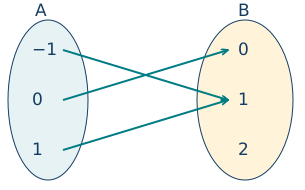
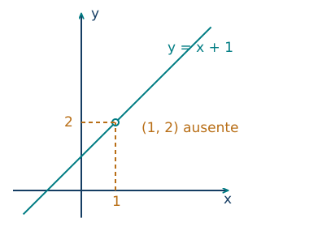
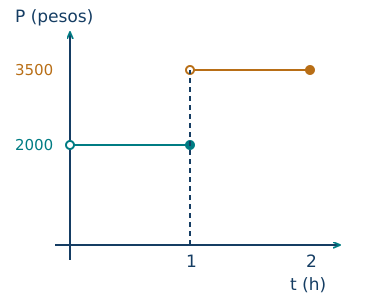
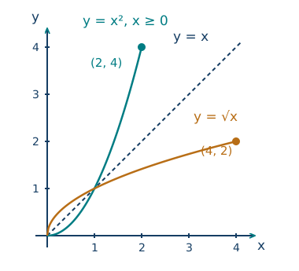

Funciones, dominios y representaciones
← Coordenadas, rectas, distancias y vectores · Índice del libro · Siguiente →
Una empresa de transporte ofrece calcular el precio de un viaje a partir de su distancia. Para que esa promesa sea precisa necesitamos conocer la tarifa, la unidad de distancia y las condiciones del servicio. Con una tarifa fija, cada distancia admisible debe conducir a un precio determinado. Si el precio depende también de la hora, habrá que fijarla o incorporarla entre los datos de entrada. Una dependencia puede parecer sencilla y, sin embargo, exigir que expliquemos con cuidado qué información estamos dando.
Las funciones expresan esta clase de correspondencia. Nos permitirán estudiar en un mismo lenguaje una tarifa, el área de un terreno, la lectura de un sensor y una curva dibujada en el plano. Cada representación mostrará algo que conviene observar: una fórmula facilita calcular, una tabla permite comparar valores y una gráfica hace visible cómo se distribuyen los pares. Aprenderemos a pasar entre ellas conservando las condiciones que dan sentido a la dependencia.
Una entrada y su imagen
Una función \(f:A\to B\) asigna a cada elemento de \(A\) exactamente un elemento de \(B\). El conjunto \(A\) es su dominio y \(B\) su codominio. Para \(x\in A\), el elemento asignado se escribe \(f(x)\) y se llama imagen de \(x\). El recorrido, que denotaremos por \(f(A)\), reúne las imágenes que efectivamente se obtienen: \(f(A)=\{f(x):x\in A\}\). Por tanto, \(f(A)\subseteq B\).
Una correspondencia entre dos conjuntos también puede describirse como una relación: un conjunto de pares \((x,y)\) que indica qué elementos están relacionados. Para representar una función con dominio \(A\), cada \(x\in A\) debe aparecer en un único par. Es posible que distintas entradas compartan su imagen; cada entrada conserva, aun así, una salida determinada. También es posible que algunos elementos del codominio queden sin recibir una flecha.

Conviene dar a estas palabras un ejemplo de uso. Si una ficha identifica una persona y su fecha de nacimiento registrada, la ficha determina una fecha; varias fichas pueden compartirla. Si queremos conocer la edad, la fecha de consulta participa también en el cálculo. Explicitar la entrada completa nos permite precisar qué dependencia estamos estudiando y mantenerla fija mientras hacemos preguntas sobre ella.
Problema 1. Leer una correspondencia finita
Sean \(A=\{-1,0,1\}\) y \(B=\{0,1,2\}\). Los pares \((-1,1)\), \((0,0)\) y \((1,1)\) describen una correspondencia. ¿Definen una función \(A\to B\)? Determina su recorrido.
Solución. Cada elemento del dominio aparece una vez: las imágenes de \(-1\), \(0\) y \(1\) son, respectivamente, \(1\), \(0\) y \(1\). Por ello se cumplen existencia y unicidad de salida para cada entrada. El recorrido es \(\{0,1\}\), mientras el codominio declarado es \(\{0,1,2\}\). El valor dos pertenece al conjunto de llegada y queda sin preimagen. Compartir la imagen uno resulta compatible con la definición de función.
Problema 2. Una circunferencia y una elección de altura
La relación \(x^2+y^2=4\) reúne los puntos de una circunferencia. Examina si determina \(y\) como función de \(x\) en \([-2,2]\). Describe después una función cuya gráfica sea la semicircunferencia superior.
Solución. Para \(x=0\), la ecuación admite \(y=2\) y \(y=-2\). Esa entrada posee dos alturas, por lo que la relación completa incumple la unicidad exigida. La semicircunferencia superior incorpora la condición \(y\ge0\) y queda descrita por \(g(x)=\sqrt{4-x^2}\), con dominio \([-2,2]\). El radicando es no negativo en ese intervalo y la raíz cuadrada elegida asigna una única altura. Su recorrido es \([0,2]\): cada altura \(y\) de ese intervalo aparece, por ejemplo, con \(x=\sqrt{4-y^2}\).
El símbolo \(f(x)\) representa el valor que la función asigna al argumento escrito entre paréntesis. Si conocemos una fórmula para \(f\), evaluar consiste en sustituir ese argumento en cada aparición de la variable y conservar los paréntesis necesarios. La letra usada para la entrada puede cambiar: \(f(t)=t^2-3t\) y \(f(x)=x^2-3x\) expresan la misma regla cuando dominio y codominio coinciden.
Problema 3. Sustituir un número y una expresión
Para \(f(t)=t^2-3t\), definida en los reales, calcula \(f(-2)\) y desarrolla \(f(a+h)-f(a)\).
Solución. Al sustituir \(-2\), los paréntesis muestran que el cuadrado afecta al número completo: \(f(-2)=(-2)^2-3(-2)=4+6=10\). Para el segundo cálculo, \(f(a+h)=(a+h)^2-3(a+h)\). Restamos \(f(a)=a^2-3a\) y distribuimos el signo de la resta:
\[\begin{aligned}f(a+h)-f(a)&=a^2+2ah+h^2-3a-3h-a^2+3a\\&=2ah+h^2-3h.\end{aligned}\]
La expresión mide el cambio de imagen al pasar de la entrada \(a\) a la entrada \(a+h\). Para \(h=0\) vale cero, como exige esa interpretación.
Una función afín tiene una regla de la forma \(f(x)=mx+b\), con \(m,b\) reales fijos. Cuando \(b=0\), la regla \(f(x)=mx\) define una función lineal. Si cero pertenece al dominio, \(f(0)=b\) permite interpretar el término constante.
Una familia de funciones incorpora parámetros: números que elegimos para fijar una regla dentro de la familia. En \(C_m(x)=1500+mx\), la variable \(x\) puede representar distancia y \(m\) la tarifa por unidad de distancia. Durante la evaluación de una función concreta, el parámetro conserva el valor elegido.
Problema 4. Fijar una tarifa
El precio, en pesos, de un servicio se modela por \(C_m(x)=1500+mx\), para \(0\le x\le20\) kilómetros. Si un viaje de cinco kilómetros cuesta \(5500\) pesos, determina \(m\) y calcula el precio a los ocho kilómetros.
Solución. El dato significa \(C_m(5)=5500\), así que \(1500+5m=5500\). Restar el cargo fijo deja \(5m=4000\) y dividir por cinco da \(m=800\) pesos por kilómetro. La función fijada es \(C_{800}(x)=1500+800x\). Su valor en ocho kilómetros es \(1500+6400=7900\) pesos. El dominio declarado mantiene el cálculo dentro de la extensión de servicio que contempla el modelo.
Propiedades de una función y su evaluación
| Propiedad | Fórmula y condiciones de uso |
|---|---|
| Asignación funcional | \(f:A\to B\) asigna a cada \(x\in A\) una única imagen \(f(x)\in B\). |
| Recorrido | \(f(A)=\{f(x):x\in A\}\subseteq B\). |
| Evaluación | En una fórmula, \(f(u)\) se obtiene sustituyendo el argumento completo \(u\); se exige \(u\in A\). |
| Cambio de imagen | \(f(a+h)-f(a)\) requiere \(a,a+h\in A\). |
| Familia afín y lineal | Regla afín \(f(x)=mx+b\); lineal \(f(x)=mx\), con parámetros reales fijos y dominio declarado. |
| Igualdad de funciones | Mismos dominio, codominio y asignación en cada entrada, bajo la convención adoptada en este libro. |
Pruebas. En el apéndice, «Funciones, imágenes y sustitución».
Elegir el dominio y encontrar el recorrido
Una expresión real permite calcular para ciertos valores de sus letras. Su dominio natural real reúne todos los valores en los que las operaciones escritas están definidas en los reales. En particular, un denominador exige un valor distinto de cero y una raíz de índice par exige un radicando no negativo. Cuando varias operaciones participan en la expresión, sus condiciones deben cumplirse simultáneamente.
Una situación concreta puede pedir un dominio más pequeño. Una longitud de lado debe ser positiva; una cantidad de personas toma valores enteros; un tiempo de observación puede estar acotado por la duración del experimento. El dominio de la función que usamos resulta de combinar las condiciones matemáticas con las condiciones declaradas del problema.
Problema 5. Una raíz y un denominador
Determina el dominio natural real de \(f(x)=\sqrt{x-1}/(x-3)\).
Solución. La raíz exige \(x-1\ge0\), es decir, \(x\ge1\). El denominador exige \(x\ne3\). Ambas condiciones dan \([1,3)\cup(3,\infty)\). El extremo uno está incluido porque su radicando es cero y su denominador vale \(-2\); allí la función tiene imagen cero. En tres, la división carece de valor y ese punto queda excluido.
Problema 6. El signo de una fracción dentro de una raíz
Encuentra el dominio natural real de \(g(x)=\sqrt{(x-1)/(x+2)}\).
Solución. El denominador obliga a excluir \(-2\). Además, la fracción debe ser no negativa. Los puntos que separan sus posibles signos son \(-2\) y \(1\). Para \(x<-2\), numerador y denominador son negativos y el cociente es positivo. Entre \(-2\) y \(1\), sus signos son opuestos y el cociente es negativo. Para \(x>1\), ambos son positivos. En \(x=1\) el cociente vale cero y la raíz existe. El dominio es \((-\infty,-2)\cup[1,\infty)\). La raíz afecta a la fracción completa: su condición se decide por el signo de ese cociente.
El recorrido exige otra clase de pregunta: qué valores se alcanzan cuando la entrada recorre el dominio elegido. Una manera de justificarlo consiste en proponer una imagen \(y\), resolver \(f(x)=y\) y comprobar si la entrada obtenida pertenece al dominio. Así podemos probar tanto que los valores anunciados aparecen como que las exclusiones son necesarias.
Problema 7. Un punto ausente cambia el recorrido
Sea \(f(x)=(x^2-1)/(x-1)\) en su dominio natural. Simplifica la regla y determina el recorrido.
Solución. Factorizar da \((x-1)(x+1)/(x-1)=x+1\) para \(x\ne1\). La función conserva el dominio \(\mathbb R\setminus\{1\}\). Para una imagen propuesta \(y\), la ecuación \(y=x+1\) obliga a \(x=y-1\). Esta entrada es admisible exactamente cuando \(y\ne2\). Por tanto, el recorrido es \(\mathbb R\setminus\{2\}\). La gráfica es la recta \(y=x+1\) con el punto \((1,2)\) ausente.

Problema 8. Área y condiciones geométricas
Un rectángulo tiene perímetro de veinte metros y lados positivos. Expresa su área mediante la longitud \(x\) de uno de los lados; determina dominio y recorrido.
Solución. Si el otro lado mide \(z\), la condición \(2x+2z=20\) da \(z=10-x\). La positividad de ambos lados exige \(0<x<10\). El área es \(A(x)=x(10-x)=25-(x-5)^2\), en metros cuadrados. Es positiva para esas entradas y alcanza veinticinco cuando \(x=5\). Para cualquier área \(y\) con \(0<y\le25\), tomar \(x=5-\sqrt{25-y}\) proporciona una entrada de \((0,5]\) y produce precisamente esa área. El recorrido es, por tanto, \((0,25]\). El área cero corresponde a un extremo degenerado que las condiciones de lados positivos dejan fuera del dominio.
Propiedades del dominio y del recorrido
| Propiedad | Fórmula y condiciones de uso |
|---|---|
| División real | En \(p(x)/q(x)\) se exige \(q(x)\ne0\) y que ambas expresiones estén definidas. |
| Raíz par real | En \(\sqrt[2n]{u(x)}\) se exige \(u(x)\ge0\), con \(n\) entero positivo. |
| Condiciones simultáneas | El dominio satisface la intersección de todas las restricciones. |
| Simplificación con dominio | Una igualdad algebraica se aplica en las entradas donde ambas expresiones originales están definidas. |
| Comprobación del recorrido | \(y\in f(A)\) equivale a que exista \(x\in A\) con \(f(x)=y\). |
Pruebas. En el apéndice, «Dominios y valores alcanzados».
Tablas, gráficas y fórmulas
La gráfica de \(f:A\to\mathbb R\), con \(A\subseteq\mathbb R\), es el conjunto de puntos \((x,f(x))\) para \(x\in A\). Al recorrerla, la primera coordenada indica la entrada y la segunda su imagen. Una línea vertical de abscisa admisible debe encontrar exactamente un punto de la gráfica. Esta lectura geométrica expresa las dos exigencias de la definición de función: una imagen para cada entrada del dominio y unicidad de esa imagen.
Una tabla finita puede describir completamente una función de dominio finito o recoger una muestra de otra cuyo dominio sea más amplio. Cuando una regla se declara para todos los valores de un intervalo, una lista de valores ofrece referencias para dibujar y comprobar; los demás puntos siguen determinados por la regla.
Problema 9. De una regla a una tabla y una recta
Para \(f(x)=2x-1\) en \([-2,2]\), calcula las imágenes de las entradas enteras del dominio, describe la gráfica y encuentra el recorrido.
Solución. La sustitución de \(-2,-1,0,1,2\) da, en ese orden, \(-5,-3,-1,1,3\). Podemos registrar los pares en una tabla. La ecuación \(y=2x-1\) representa una recta y el dominio selecciona el segmento desde \((-2,-5)\) hasta \((2,3)\), con ambos extremos incluidos. La regla es creciente porque, si \(a<b\), entonces \(f(b)-f(a)=2(b-a)>0\). Sus imágenes recorren \([-5,3]\): para cualquier \(y\) de ese intervalo, \(x=(y+1)/2\) pertenece a \([-2,2]\) y satisface la ecuación.
| Entrada \(x\) | Imagen \(f(x)=2x-1\) |
|---|---|
| \(-2\) | \(-5\) |
| \(-1\) | \(-3\) |
| \(0\) | \(-1\) |
| \(1\) | \(1\) |
| \(2\) | \(3\) |
Problema 10. Una gráfica con dos respuestas a una pregunta inversa
Considera \(f(x)=2-|x-1|\) para \(-1\le x\le3\). Determina \(f(1)\), el recorrido y todas las entradas cuya imagen sea uno.
Solución. En \(x=1\), el valor absoluto es cero y \(f(1)=2\). Dentro del dominio, \(|x-1|\) recorre \([0,2]\), por lo que las imágenes recorren \([0,2]\). La ecuación \(f(x)=1\) equivale a \(|x-1|=1\); sus soluciones son \(x=0\) y \(x=2\), ambas admisibles. La gráfica está formada por dos segmentos que suben desde \((-1,0)\) hasta \((1,2)\) y bajan hasta \((3,0)\). Una altura puede corresponder a varias entradas y cada entrada mantiene su imagen única.
Los cortes con el eje horizontal se obtienen resolviendo \(f(x)=0\) dentro del dominio. El corte con el eje vertical existe cuando \(0\) pertenece al dominio y tiene coordenadas \((0,f(0))\). Las proyecciones de la gráfica sobre los ejes permiten leer, respectivamente, el dominio y el recorrido. Hay que observar los puntos abiertos, cerrados y ausentes: su inclusión forma parte del conjunto representado.
Problema 11. Reconocer puntos de una parábola
Para \(p(x)=(x-1)^2-4\), definida en los reales, determina los cortes con los ejes, el punto más bajo y el recorrido.
Solución. Resolver \(p(x)=0\) da \((x-1)^2=4\), de donde \(x=-1\) o \(x=3\). Los cortes horizontales son \((-1,0)\) y \((3,0)\). Como \(p(0)=1-4=-3\), el corte vertical es \((0,-3)\). El cuadrado es siempre no negativo y vale cero exactamente en \(x=1\); el punto más bajo es \((1,-4)\). Toda imagen \(y\ge-4\) aparece con \(x=1+\sqrt{y+4}\), así que el recorrido es \([-4,\infty)\).
Problema 12. Comparar dos funciones
Sean \(f:\mathbb R\setminus\{1\}\to\mathbb R\), dada por \(f(x)=(x^2-1)/(x-1)\), y \(g:\mathbb R\to\mathbb R\), dada por \(g(x)=x+1\). Compara ambas funciones y la restricción de \(g\) a \(\mathbb R\setminus\{1\}\).
Solución. Para cada entrada del dominio de \(f\), la factorización demuestra \(f(x)=g(x)\). Sus dominios son distintos: \(g(1)=2\) está definido y \(f(1)\) queda fuera de la asignación de \(f\). Bajo la convención adoptada, representan funciones distintas. Si restringimos \(g\) al dominio \(\mathbb R\setminus\{1\}\) y conservamos codominio \(\mathbb R\), la función resultante coincide con \(f\) en los tres datos: dominio, codominio y asignación. Restringir conserva los pares cuyas entradas pertenecen al subconjunto elegido.
Propiedades de las representaciones
| Propiedad | Fórmula y condiciones de uso |
|---|---|
| Gráfica | \(G_f=\{(x,f(x)):x\in A\}\) para una función real de variable real. |
| Lectura vertical | Para cada \(x\in A\), la vertical correspondiente encuentra exactamente un punto de \(G_f\). |
| Ceros y corte vertical | Ceros: soluciones admisibles de \(f(x)=0\); corte vertical: \((0,f(0))\) si \(0\in A\). |
| Proyecciones de la gráfica | Las abscisas forman \(A\) y las ordenadas forman \(f(A)\). |
| Restricción | Para \(D\subseteq A\), \(f\vert_D\) conserva las imágenes de entradas de \(D\) y tiene recorrido \(f(D)\subseteq f(A)\). |
Pruebas. En el apéndice, «Gráficas, restricciones y lectura de valores».
Comparar imágenes: variación, extremos y simetría
Una función es estrictamente creciente en un intervalo de su dominio cuando \(a<b\) implica \(f(a)<f(b)\) para cualesquiera entradas de ese intervalo. Es estrictamente decreciente cuando la misma condición implica \(f(a)>f(b)\). El crecimiento compara las imágenes de dos entradas ordenadas. Los valores de las imágenes, positivos o negativos, se estudian mediante otra pregunta: su posición respecto de cero.
También usaremos «no decreciente» para \(f(a)\le f(b)\) cuando \(a<b\), y «no creciente» para \(f(a)\ge f(b)\). Estas convenciones incluyen tramos constantes. Cuando afirmemos crecimiento estricto o decrecimiento estricto, lo diremos expresamente.
Problema 13. Variación y extremos en un intervalo
Estudia \(f(x)=(x-2)^2+1\) en \([-1,4]\): encuentra los intervalos de variación estricta, sus extremos absolutos y su recorrido.
Solución. Para \(a<b\), la diferencia de imágenes es \((b-2)^2-(a-2)^2=(b-a)(a+b-4)\). Si \(a<b\le2\), el primer factor es positivo y el segundo negativo, así que la función decrece estrictamente en \([-1,2]\). Si \(2\le a<b\), ambos factores son positivos y crece estrictamente en \([2,4]\). El mínimo es uno y se alcanza en dos. Para el máximo comparamos los extremos del dominio: \(f(-1)=10\) y \(f(4)=5\), de modo que el máximo es diez. El recorrido es \([1,10]\): todo \(y\) de ese intervalo se obtiene con \(x=2-\sqrt{y-1}\in[-1,2]\).
Problema 14. Crecer con imágenes negativas
Para \(h(x)=-5+2x\) en \([-2,2]\), determina el signo de sus imágenes y su variación.
Solución. En el intervalo, \(h(-2)=-9\) y \(h(2)=-1\). Para \(a<b\), la diferencia \(h(b)-h(a)=2(b-a)\) es positiva, luego \(h\) es estrictamente creciente. Su recorrido es \([-9,-1]\), enteramente negativo. Por ejemplo, al pasar de \(x=-1\) a \(x=1\), la imagen pasa de \(-7\) a \(-3\): aumenta cuatro unidades y permanece debajo del eje horizontal.
Un máximo absoluto es una imagen \(f(c)\) que satisface \(f(x)\le f(c)\) para todas las entradas del dominio estudiado. Un mínimo absoluto satisface la desigualdad inversa. La palabra «alcanzar» importa: una cota puede limitar las imágenes sin ser ella misma una imagen.
La simetría requiere observar también el dominio. Lo llamamos simétrico respecto de cero cuando \(x\in A\) implica \(-x\in A\). En ese dominio, una función es par si \(f(-x)=f(x)\) para todo \(x\), e impar si \(f(-x)=-f(x)\). En la gráfica, estas identidades corresponden a reflexión en el eje vertical y a giro de media vuelta alrededor del origen, respectivamente.
Problema 15. Dos simetrías y una restricción
Estudia la paridad de \(f(x)=x^4+2x^2\) y \(g(x)=x^3-3x\), ambas en los reales. Examina qué sucede al restringir \(g\) a \([0,\infty)\).
Solución. Al sustituir \(-x\), obtenemos \(f(-x)=(-x)^4+2(-x)^2=x^4+2x^2=f(x)\); por ello \(f\) es par. Para \(g\), \(g(-x)=-x^3+3x=-g(x)\), así que es impar. La restricción a \([0,\infty)\) conserva la fórmula y cambia el dominio. Este nuevo dominio carece de la simetría requerida: contiene dos y excluye menos dos. La clasificación como función impar, con la definición adoptada, exige el dominio simétrico.
Problema 16. Una cota que se alcanza y otra que se aproxima
Sea \(f(x)=x\) con dominio \((0,1]\). Determina si tiene máximo y mínimo absolutos.
Solución. Todas las imágenes cumplen \(0<f(x)\le1\), y uno se alcanza con \(x=1\). El máximo es uno. Para cualquier entrada propuesta \(c\in(0,1]\), la entrada \(c/2\) también pertenece al dominio y produce una imagen menor. Por ello ninguna imagen puede ser mínima. Cero es una cota inferior que las imágenes pueden aproximar tanto como se quiera: para cualquier \(\varepsilon>0\), elegir \(x=\min(1/2,\varepsilon/2)\) da \(0<f(x)<\varepsilon\).
Propiedades de variación y simetría
| Propiedad | Fórmula y condiciones de uso |
|---|---|
| Crecimiento estricto | \(a<b\) implica \(f(a)<f(b)\) para todas las entradas del intervalo estudiado. |
| Decrecimiento estricto | \(a<b\) implica \(f(a)>f(b)\) en ese intervalo. |
| Máximo y mínimo absolutos | Se alcanzan en una entrada \(c\): \(f(x)\le f(c)\) o \(f(x)\ge f(c)\) para todo \(x\) del dominio estudiado. |
| Paridad | Dominio simétrico y \(f(-x)=f(x)\); la gráfica es simétrica respecto del eje vertical. |
| Imparidad | Dominio simétrico y \(f(-x)=-f(x)\); la gráfica tiene simetría central en el origen. |
| Cota alcanzada | Si \(L\le f(x)\le U\) para todo \(x\), un valor \(L\) alcanzado es mínimo y un valor \(U\) alcanzado es máximo. |
Pruebas. En el apéndice, «Orden, extremos y simetrías de funciones».
Una regla para cada tramo
Una tarifa puede aplicar un precio hasta cierta distancia y otro cálculo después. Para describirla dividimos el dominio en tramos y damos una regla para cada uno. Los intervalos deben cubrir las entradas admitidas y asignarles un valor único. Una forma especialmente clara de lograrlo consiste en usar intervalos disjuntos: un extremo pertenece a uno de los tramos y el tramo vecino comienza de forma abierta en ese mismo número.
Problema 17. Cargo fijo y distancia adicional
Un servicio cobra mil pesos por un recorrido de hasta dos kilómetros y trescientos pesos por cada kilómetro adicional, hasta diez kilómetros. Admite distancias reales \(x\) con \(0\le x\le10\). Escribe la función de precio y calcula sus valores en dos y tres kilómetros.
Solución. Los primeros dos kilómetros ya están incluidos en el cargo fijo. La distancia adicional es \(x-2\), así que
\[T(x)=\begin{cases}1000,&0\le x\le2,\\1000+300(x-2),&2<x\le10.\end{cases}\]
El primer tramo da \(T(2)=1000\) y el segundo, \(T(3)=1300\) pesos. Evaluar la segunda fórmula en el extremo dos también da mil; las reglas coinciden allí y la gráfica enlaza el tramo horizontal con el ascendente. El precio final es \(T(10)=3400\) y el recorrido completo es \([1000,3400]\).
Problema 18. Una tarifa por bloques
Una sala se arrienda por dos mil pesos para duraciones \(0<t\le1\) hora y por tres mil quinientos para \(1<t\le2\) horas. Obtén \(P(1)\) y \(P(1{,}01)\) y describe la gráfica.
Solución. La primera regla incluye una hora, de modo que \(P(1)=2000\). La duración \(1{,}01\) pertenece al segundo bloque y da \(P(1{,}01)=3500\). La gráfica tiene un segmento horizontal de altura dos mil, abierto en cero y cerrado en uno; el segundo tiene altura tres mil quinientos, abierto en uno y cerrado en dos. El recorrido es el conjunto \(\{2000,3500\}\). Al cruzar una hora aparece un salto de mil quinientos pesos, aunque el aumento de tiempo sea pequeño.

Problema 19. Elegir un parámetro para enlazar dos reglas
Sea \(f_k(x)=2x+1\) para \(x<2\) y \(f_k(x)=kx-3\) para \(x\ge2\). Determina qué valor de \(k\) hace coincidir los valores de ambas fórmulas en la frontera. Examina si los demás valores de \(k\) siguen definiendo una función.
Solución. En dos, la primera expresión da cinco y la segunda da \(2k-3\). Igualarlas exige \(5=2k-3\), luego \(k=4\). Para ese parámetro, \(f_4(2)=5\) y ambas reglas llegan a la misma altura. Para cualquier otro real \(k\), la asignación sigue siendo una función: cada entrada cumple exactamente una de las condiciones \(x<2\) o \(x\ge2\). La elección de \(k\) determina si las dos partes se enlazan a la misma altura o presentan un salto.
Propiedades de las funciones por tramos
| Propiedad | Fórmula y condiciones de uso |
|---|---|
| Dominio por tramos | Los dominios de las reglas cubren el dominio declarado. |
| Unicidad en fronteras | Si dos reglas incluyen una misma entrada, deben asignarle la misma imagen. |
| Evaluación por tramo | Primero se localiza la entrada en su intervalo y después se aplica la regla correspondiente. |
| Empalme de reglas afines | En una frontera \(a\), las expresiones \(mx+b\) y \(nx+c\) coinciden en altura si \(ma+b=na+c\); para enlazar con el punto de la función se exige ese mismo valor en \(a\). |
Pruebas. En el apéndice, «Reglas por tramos y fronteras».
Recuperar una entrada a partir de su imagen
Para recuperar una entrada a partir de su imagen podemos volver al cuadrado: las entradas dos y menos dos producen ambas cuatro, de modo que la imagen por sí sola deja dos alternativas. Necesitamos una condición que asegure una sola entrada para cada imagen. Una función es inyectiva cuando \(f(a)=f(b)\) implica \(a=b\). También debemos poder partir de cada elemento del conjunto de llegada: la función es sobreyectiva sobre el codominio declarado \(B\) cuando cada \(y\in B\) es imagen de alguna entrada. Si posee ambas propiedades, es biyectiva y cada elemento de llegada tiene exactamente una preimagen. Sobre esos conjuntos podremos definir la correspondencia que recorre la asignación en sentido inverso.
Para una función biyectiva \(f:A\to B\), su inversa \(f^{-1}:B\to A\) asigna a cada imagen su única entrada original. Por construcción, \(f^{-1}(f(x))=x\) para \(x\in A\) y \(f(f^{-1}(y))=y\) para \(y\in B\). El recíproco \(1/f(x)\) es otra operación: toma el inverso multiplicativo del número \(f(x)\) en las entradas donde ese número es distinto de cero.
Problema 20. Deshacer una transformación afín
Encuentra la inversa de \(f:\mathbb R\to\mathbb R\), \(f(x)=3x-6\), y verifica las dos recuperaciones. Calcula \(f^{-1}(6)\).
Solución. Para recuperar la entrada a partir de \(y=3x-6\), sumamos seis y dividimos por tres: \(x=(y+6)/3\). Cada real \(y\) produce una única entrada real, así que \(f\) es biyectiva y \(f^{-1}(y)=(y+6)/3\). La comprobación entrega
\[\begin{aligned}f^{-1}(f(x))&=(3x-6+6)/3=x,\\f(f^{-1}(y))&=3(y+6)/3-6=y.\end{aligned}\]
En particular, \(f^{-1}(6)=4\), que se verifica con \(f(4)=6\). El valor seis se usa como entrada de la función inversa porque antes fue imagen de cuatro. La siguiente tabla puede leerse en ambos sentidos: de izquierda a derecha aplica \(f\) y de derecha a izquierda recupera la entrada mediante \(f^{-1}\).
| Entrada de \(f\) | Imagen mediante \(f\) |
|---|---|
| \(2\) | \(0\) |
| \(3\) | \(3\) |
| \(4\) | \(6\) |
Problema 21. Elegir una rama para invertir un cuadrado
Estudia la inversión de \(q(x)=x^2\) en los reales. Encuentra una inversa al restringir el dominio a \([0,\infty)\) y adoptar ese mismo conjunto como codominio. Examina también la restricción a \((-\infty,0]\) con codominio \([0,\infty)\).
Solución. En el dominio real completo, las entradas dos y menos dos comparten la imagen cuatro; recuperar una entrada única exige precisar una rama. En \([0,\infty)\), la ecuación \(y=x^2\) tiene la solución única \(x=\sqrt y\), para cada \(y\ge0\). Esa restricción es biyectiva y su inversa es la raíz cuadrada. En \((-\infty,0]\), la solución única es \(x=-\sqrt y\) y esa es la inversa de la segunda restricción. El codominio de cada inversa coincide con el dominio de la rama original.

Problema 22. Invertir una correspondencia entre conjuntos finitos
Sean \(A=\{a,b,c\}\) y \(B=\{1,2,3,4\}\), con \(f(a)=2\), \(f(b)=4\) y \(f(c)=1\). Estudia la inyectividad y encuentra una inversa usando como conjunto de llegada el recorrido de \(f\).
Solución. Las tres entradas tienen imágenes distintas, así que la función es inyectiva. Su recorrido es \(\{1,2,4\}\). El elemento tres del codominio original carece de preimagen; una inversa definida en todo \(B\) no podría cumplir la recuperación \(f(f^{-1}(3))=3\). Si tomamos \(f:A\to\{1,2,4\}\) con la misma asignación, se vuelve biyectiva. Su inversa queda determinada por \(1\mapsto c\), \(2\mapsto a\) y \(4\mapsto b\). Cada flecha original puede entonces recorrerse en sentido inverso de manera única.
Una función estrictamente monótona en un intervalo es inyectiva: dos entradas distintas se ordenan, y la desigualdad estricta de sus imágenes impide que compartan valor. Al elegir su recorrido como codominio, podemos definir una inversa. En la gráfica, invertir intercambia los pares \((x,y)\) por \((y,x)\), operación que refleja los puntos respecto de la diagonal \(y=x\).
Propiedades de la inversa
| Propiedad | Fórmula y condiciones de uso |
|---|---|
| Inyectividad | \(f(a)=f(b)\) implica \(a=b\) para entradas del dominio. |
| Biyectividad e inversa | Para \(f:A\to B\) biyectiva existe una única \(f^{-1}:B\to A\) que recupera las entradas. |
| Dos recuperaciones | \(f^{-1}(f(x))=x\) para \(x\in A\) y \(f(f^{-1}(y))=y\) para \(y\in B\). |
| Monotonía estricta | Una función estrictamente creciente o decreciente en un intervalo es inyectiva y admite inversa sobre su recorrido. |
| Gráfica de la inversa | \((x,y)\in G_f\) equivale a \((y,x)\in G_{f^{-1}}\); reflexión en \(y=x\). |
Pruebas. En el apéndice, «Inyectividad e inversión de funciones».
Una fórmula exacta y los datos de una medición
Una fórmula matemática determina sus valores en el dominio declarado. Al usarla para describir mediciones, añadimos una hipótesis sobre el fenómeno: por ejemplo, que el precio crece a una tarifa constante o que un sensor responde de forma afín dentro de cierto intervalo. Los datos permiten contrastar esa hipótesis y estimar sus parámetros. Una medición puede contener variaciones y errores; la discrepancia entre dato y predicción ayuda a evaluar el alcance del modelo.
Problema 23. Ajustar una regla y contrastarla
En un registro de viajes aparecen los pares distancia-precio \((0,1200)\), \((2,2400)\) y \((4,3600)\), con kilómetros y pesos. Bajo una hipótesis afín, encuentra el modelo y predice el precio a seis kilómetros. Compara con una medición posterior de cinco mil pesos para esa distancia.
Solución. La entrada cero fija el cargo inicial en mil doscientos pesos. Entre cero y dos kilómetros, el precio aumenta mil doscientos, lo que da seiscientos pesos por kilómetro. La regla propuesta es \(C(x)=1200+600x\), y en cuatro predice \(3600\), coincidiendo con el tercer dato. En seis predice \(4800\) pesos. La nueva medición excede la predicción en \(200\) pesos. Esa diferencia puede orientar la búsqueda de recargos, cambios de tarifa o incertidumbre de registro. Los tres primeros datos sostienen la compatibilidad del modelo con esas observaciones; el nuevo dato precisa una limitación que debemos investigar.
Problema 24. Qué determinan tres observaciones
Se conocen los valores \(f(0)=1\), \(f(1)=3\) y \(f(2)=5\). Compara las reglas \(p(x)=2x+1\) y \(q(x)=2x+1+x(x-1)(x-2)\). Examina sus valores en tres y en \(3/2\).
Solución. El producto añadido vale cero en cero, uno y dos; por ello ambas reglas reproducen exactamente los tres datos. En tres, \(p(3)=7\) y \(q(3)=7+3\cdot2\cdot1=13\). Incluso dentro del intervalo de observación pueden diferir: \(p(3/2)=4\), mientras el término añadido es \((3/2)(1/2)(-1/2)=-3/8\), de modo que \(q(3/2)=29/8\). Los datos finitos son compatibles con distintas reglas en un dominio más amplio. Elegir una clase de modelos y justificarla forma parte del problema de interpretación.
Propiedades de datos y modelos
| Propiedad | Fórmula y condiciones de uso |
|---|---|
| Residuo de una predicción | Para un dato \((x_i,y_i)\) y un modelo \(m\), \(r_i=y_i-m(x_i)\). |
| Compatibilidad exacta con una muestra | Se cumple cuando \(m(x_i)=y_i\) en todas las entradas observadas. |
| Libertad entre observaciones | Si \(p\) reproduce datos en \(x_1,\ldots,x_n\), también los reproduce \(p(x)+k\prod_{i=1}^n(x-x_i)\), para cualquier real \(k\), en un dominio común. |
Pruebas. En el apéndice, «Datos finitos y alcance de un modelo».
Ejercicios para trabajar sin profesor
1. Sean \(A=\{0,1,2\}\), \(B=\{a,b,c\}\) y los pares \((0,a)\), \((1,a)\), \((2,c)\). Decide si describen una función \(A\to B\) y encuentra su recorrido.
2. Examina la relación \(y^2=x\) para \(x\ge0\). Describe una función al añadir \(y\le0\) y determina su recorrido.
3. Para \(f(t)=t^2+2t\), calcula \(f(-3)\) y desarrolla \(f(a+h)-f(a)\).
4. Un modelo \(C_m(x)=800+mx\), para \(0\le x\le15\) kilómetros, cumple \(C_m(4)=3600\) pesos. Encuentra \(m\) y \(C_m(7)\).
5. Determina el dominio natural de \(\sqrt{x+2}/(x-1)\).
6. Determina el dominio natural de \(\sqrt{(x+1)/(x-2)}\).
7. Simplifica \((x^2-4)/(x-2)\) conservando el dominio natural y encuentra su recorrido.
8. Un rectángulo de lados positivos tiene perímetro de doce metros. Expresa su área según un lado y determina dominio y recorrido.
9. Para \(f(x)=3-x\) en \([-1,3]\), calcula las imágenes de sus entradas enteras, describe la gráfica y determina el recorrido.
10. Sea \(f(x)=3-|x|\) en \([-3,3]\). Determina su recorrido, sus ceros y todas las entradas con imagen uno.
11. Para \(p(x)=(x+2)^2-9\) en los reales, encuentra cortes con los ejes, mínimo y recorrido.
12. Compara \(f(x)=(x^2-4)/(x-2)\) con dominio natural y \(g(x)=x+2\) en los reales, ambas con codominio real. Especifica una restricción que las haga coincidir como funciones.
13. Estudia variación estricta, extremos y recorrido de \((x+1)^2-2\) en \([-3,2]\).
14. Estudia signo y variación de \(h(x)=-10+x\) en \([1,4]\).
15. Examina la paridad de \(f(x)=x^6+1\) y \(g(x)=x^5+x\) en los reales y la restricción de \(f\) a \([0,2]\).
16. Para \(f(x)=x\) en \([-1,2)\), determina si hay máximo y mínimo absolutos.
17. Un servicio cobra quinientos pesos hasta un kilómetro, incluido cero, y doscientos por cada kilómetro adicional, hasta cinco. Escribe la función, calcula sus valores en uno y tres kilómetros y determina su recorrido.
18. Una tarifa vale diez para \(0<t\le2\) y dieciocho para \(2<t\le4\). Calcula los valores en dos y \(2{,}1\), el recorrido y la magnitud del salto.
19. Se define \(f_k(x)=3x-1\) para \(x<1\) y \(kx+2\) para \(x\ge1\). Encuentra \(k\) para que coincidan las alturas en la frontera y explica la existencia de la función para otros valores.
20. Encuentra y verifica la inversa de \(f:\mathbb R\to\mathbb R\), \(f(x)=4x+8\). Calcula \(f^{-1}(20)\).
21. Restringe \(f(x)=(x-1)^2\) a \([1,\infty)\) y toma codominio \([0,\infty)\). Encuentra su inversa y verifica ambas recuperaciones.
22. Para \(A=\{u,v,w\}\), \(B=\{0,1,2,3\}\) y \(f(u)=3\), \(f(v)=0\), \(f(w)=2\), encuentra el recorrido y la inversa sobre él.
23. Ajusta una regla afín a \((0,500)\), \((3,1400)\) y \((6,2300)\). Predice su valor en ocho y calcula el residuo si se observa \(3000\).
24. Para los datos \((0,2)\), \((1,5)\) y \((2,8)\), compara \(p(x)=3x+2\) y \(q(x)=3x+2+2x(x-1)(x-2)\) en las entradas observadas y en tres.
Soluciones desarrolladas
Ejercicio 1. Entradas con una misma imagen
Cada elemento de \(A\) aparece en un único par y su segunda componente pertenece a \(B\). Por ello los pares definen una función. El recorrido es \(\{a,c\}\); la imagen compartida de cero y uno es \(a\), y el elemento \(b\) del codominio queda sin preimagen.
Ejercicio 2. Elegir la raíz negativa
Para \(x=1\), la relación admite \(y=1\) y \(y=-1\), así que la relación completa tiene dos salidas en esa entrada. La condición \(y\le0\) selecciona \(g(x)=-\sqrt x\) en \([0,\infty)\). Su recorrido es \((-\infty,0]\): para cada \(y\le0\), la entrada \(x=y^2\) produce \(-\sqrt{y^2}=-|y|=y\).
Ejercicio 3. Argumentos entre paréntesis
Sustituir da \(f(-3)=(-3)^2+2(-3)=9-6=3\). Para el incremento, desarrollamos \((a+h)^2+2(a+h)-(a^2+2a)\) y obtenemos \(2ah+h^2+2h\). Al tomar \(h=0\), la diferencia vale cero; el dominio real permite ambos argumentos para todo \(a,h\) reales.
Ejercicio 4. Obtener el parámetro
El dato significa \(800+4m=3600\), de modo que \(4m=2800\) y \(m=700\) pesos por kilómetro. Así, \(C_{700}(7)=800+4900=5700\) pesos. La entrada siete está dentro del intervalo de servicio declarado y la tarifa conserva su unidad de pesos por kilómetro.
Ejercicio 5. Intersectar restricciones
La raíz exige \(x+2\ge0\), o \(x\ge-2\). El denominador exige \(x\ne1\). El dominio es \([-2,1)\cup(1,\infty)\). En \(-2\) la imagen es cero, pues la raíz vale cero y el denominador vale \(-3\); en uno la división queda excluida.
Ejercicio 6. Un cuadro de signos verbal
Los puntos críticos son \(-1\) y \(2\). Para \(x<-1\), numerador y denominador son negativos; entre \(-1\) y \(2\), tienen signos opuestos; para \(x>2\), ambos son positivos. Se admite \(-1\), donde el cociente vale cero, y se excluye dos por el denominador. Resulta \((-\infty,-1]\cup(2,\infty)\).
Ejercicio 7. Una imagen ausente
La factorización da \((x-2)(x+2)/(x-2)=x+2\) para \(x\ne2\). Su dominio natural conserva esa exclusión. Resolver \(y=x+2\) da \(x=y-2\), que es admisible exactamente cuando \(y\ne4\). El recorrido es \(\mathbb R\setminus\{4\}\) y la gráfica tiene ausente el punto \((2,4)\).
Ejercicio 8. Un área positiva acotada
El segundo lado es \(6-x\), así que \(0<x<6\). El área es \(A(x)=x(6-x)=9-(x-3)^2\). Es positiva y alcanza nueve en tres. Para cada \(0<y\le9\), la entrada \(x=3-\sqrt{9-y}\) pertenece a \((0,3]\) y produce \(y\). El recorrido es \((0,9]\) metros cuadrados.
Ejercicio 9. Una tabla sobre un segmento
Para las entradas \(-1,0,1,2,3\), las imágenes son \(4,3,2,1,0\). La gráfica es el segmento de \((-1,4)\) a \((3,0)\), con extremos incluidos. Para \(a<b\), la diferencia de imágenes es \(-(b-a)<0\), por lo que decrece estrictamente. Su recorrido es \([0,4]\): cada \(y\) de ese intervalo se obtiene con \(x=3-y\) en el dominio.
Ejercicio 10. Leer alturas repetidas
El valor absoluto recorre \([0,3]\) y la función recorre \([0,3]\). Sus ceros satisfacen \(|x|=3\), luego son \(x=-3\) y \(x=3\). Para la imagen uno, \(3-|x|=1\) da \(|x|=2\), con entradas \(-2\) y \(2\). Todas pertenecen al dominio declarado.
Ejercicio 11. Un mínimo y dos ceros
La ecuación \((x+2)^2=9\) da \(x=-5\) o \(x=1\). Los cortes horizontales son \((-5,0)\) y \((1,0)\). En cero la imagen vale \(4-9=-5\), así que el corte vertical es \((0,-5)\). El mínimo es \(-9\), alcanzado en \(x=-2\), y el recorrido es \([-9,\infty)\): para \(y\ge-9\) sirve \(x=-2+\sqrt{y+9}\).
Ejercicio 12. Conservar las entradas permitidas
La primera función tiene dominio \(\mathbb R\setminus\{2\}\) y satisface \(f(x)=x+2\) en cada entrada admisible. La segunda incluye además \(g(2)=4\). Para obtener igualdad de funciones con el mismo codominio real, restringimos \(g\) a \(\mathbb R\setminus\{2\}\). Sus gráficas coinciden entonces con la recta que tiene ausente \((2,4)\).
Ejercicio 13. Ordenar cuadrados desde el vértice
Para \(a<b\), la diferencia es \((b+1)^2-(a+1)^2=(b-a)(a+b+2)\). Es negativa si \(a<b\le-1\) y positiva si \(-1\le a<b\). La función decrece estrictamente en \([-3,-1]\) y crece estrictamente en \([-1,2]\). El mínimo vale \(-2\) en \(-1\); los valores extremos del dominio son dos y siete, de modo que el máximo es siete en dos. El recorrido es \([-2,7]\): \(x=-1+\sqrt{y+2}\) recorre \([-1,2]\) cuando \(y\) recorre ese intervalo.
Ejercicio 14. Imágenes negativas que aumentan
Para \(a<b\), \(h(b)-h(a)=b-a>0\); la función es estrictamente creciente. Sus imágenes van de \(h(1)=-9\) a \(h(4)=-6\), ambas incluidas, y todas son negativas. La ubicación debajo del eje horizontal y el crecimiento describen propiedades compatibles.
Ejercicio 15. Revisar fórmula y dominio
El dominio real es simétrico. Tenemos \(f(-x)=(-x)^6+1=f(x)\), así que \(f\) es par. También \(g(-x)=-x^5-x=-g(x)\), de modo que \(g\) es impar. La restricción de \(f\) a \([0,2]\) conserva los valores de esa parte de la curva, pero su dominio contiene uno y excluye menos uno. La definición de paridad requiere dominio simétrico.
Ejercicio 16. Un extremo abierto
El valor \(-1\) es la menor imagen y se alcanza en \(x=-1\), por lo que es mínimo absoluto. Para cada \(c<2\) del dominio, \((c+2)/2\) está entre \(c\) y dos, pertenece al dominio y tiene imagen mayor. Por ello no hay máximo. Dos es una cota superior y las imágenes pueden acercarse arbitrariamente a ella desde abajo.
Ejercicio 17. Contar la distancia adicional
La regla es \(T(x)=500\) para \(0\le x\le1\) y \(T(x)=500+200(x-1)\) para \(1<x\le5\). Da \(T(1)=500\) y \(T(3)=900\). Ambas expresiones coinciden en la altura quinientos al evaluar el extremo uno. Como \(T(5)=1300\) y el segundo tramo recorre todos los precios intermedios, el recorrido es \([500,1300]\).
Ejercicio 18. Dos alturas de tarifa
El primer intervalo incluye dos, así que \(P(2)=10\). La entrada \(2{,}1\) pertenece al segundo y da dieciocho. El recorrido es \(\{10,18\}\) y el salto tiene magnitud ocho. En la gráfica, el punto \((2,10)\) es cerrado y \((2,18)\) es abierto; esto conserva una sola imagen en la entrada dos.
Ejercicio 19. Hacer coincidir los extremos de las reglas
En la frontera uno, la primera fórmula da \(3-1=2\) y la segunda \(k+2\). La coincidencia exige \(k=0\). Para ese parámetro, la imagen en uno es dos. Para todo real \(k\), los intervalos \(x<1\) y \(x\ge1\) reparten las entradas de forma disjunta y completa, por lo que la asignación sigue siendo funcional.
Ejercicio 20. Recuperar mediante una regla afín
Despejar \(y=4x+8\) da \(x=(y-8)/4\). Cada real \(y\) tiene una preimagen única, así que \(f^{-1}(y)=(y-8)/4\). Se verifica \(f^{-1}(f(x))=(4x+8-8)/4=x\) y \(f(f^{-1}(y))=4(y-8)/4+8=y\). En veinte, la inversa vale tres y la comprobación original es \(f(3)=20\).
Ejercicio 21. Una raíz con desplazamiento
En el dominio elegido, \(x-1\ge0\), por lo que resolver \(y=(x-1)^2\) da \(x=1+\sqrt y\). Así, \(f^{-1}:[0,\infty)\to[1,\infty)\) tiene regla \(1+\sqrt y\). Para \(x\ge1\), \(1+\sqrt{(x-1)^2}=1+|x-1|=x\). Para \(y\ge0\), \((1+\sqrt y-1)^2=y\). Ambas recuperaciones verifican dominios y asignaciones.
Ejercicio 22. Recorrer las flechas al revés
El recorrido es \(\{0,2,3\}\) y las imágenes de las tres entradas son distintas. Con ese conjunto como codominio, la función es biyectiva y la inversa asigna \(0\mapsto v\), \(2\mapsto w\) y \(3\mapsto u\). El elemento uno del codominio original queda fuera del dominio de esta inversa sobre el recorrido.
Ejercicio 23. Una predicción y su residuo
La entrada cero fija el término constante en quinientos. El aumento entre cero y tres es novecientos, de modo que la pendiente es trescientos. El modelo es \(m(x)=500+300x\), que reproduce también \(m(6)=2300\). Predice \(m(8)=2900\). Frente al dato tres mil, el residuo observado menos predicho vale cien. La discrepancia se conserva como dato para contrastar las hipótesis.
Ejercicio 24. Compatibilidad con una muestra
El término \(2x(x-1)(x-2)\) vale cero en cero, uno y dos. Las dos reglas producen, respectivamente, dos, cinco y ocho en esas entradas. En tres, \(p(3)=11\) y \(q(3)=11+2\cdot3\cdot2\cdot1=23\). Ambas ajustan la muestra; sus predicciones fuera de ella difieren. Una hipótesis afín seleccionaría \(p\) dentro de esa clase de modelos.
Diagnóstico de salida
Describe una función indicando dominio, codominio y regla; identifica su recorrido y justifica que todos los valores anunciados se alcanzan. Traduce algunos pares a una tabla y una gráfica conservando extremos y exclusiones. Explica qué compara el crecimiento y qué pide la inyectividad. Al invertir una regla, comprueba las dos recuperaciones y los conjuntos entre los que actúa. Frente a una muestra de datos, declara qué hipótesis adicionales sostienen tu elección de modelo.
← Coordenadas, rectas, distancias y vectores · Índice del libro · Siguiente →